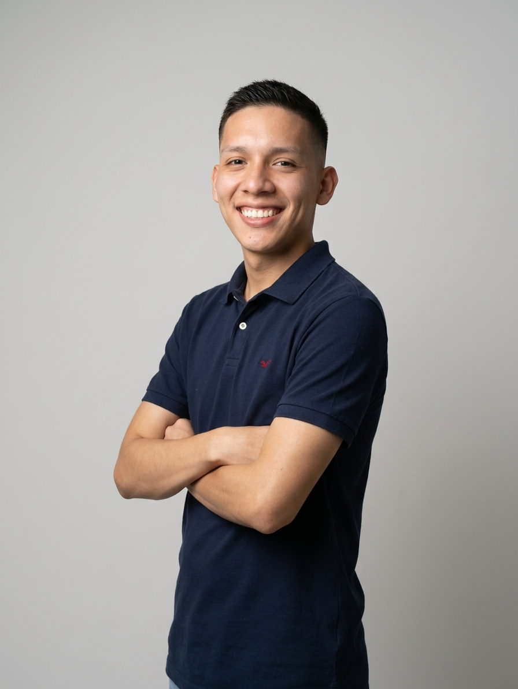
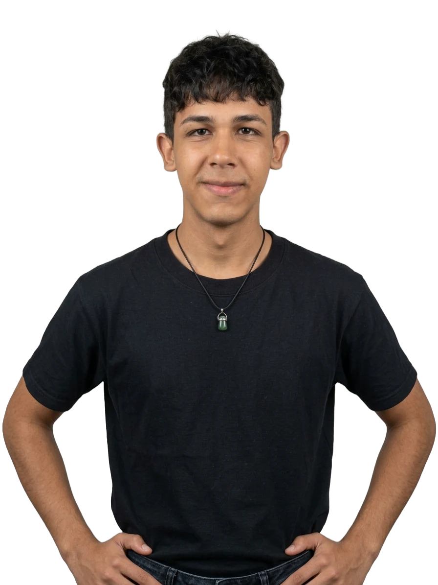

Las personas
Nuestro equipo
Bytes no es una plantilla ni un framework. Es un grupo pequeño de personas que discuten cada decisión hasta que el resultado aguanta cualquier comparación.
Ronac Manrique
CMO
Acargo de toda la comunicación de Bytes Technology, con sus habilidades a fortalecido como se percibe y como realmente se siente ser Bytes.
- Orador
- Detallista
- Enfoque

Matthew Osorio
Gerente administrativo
Como Gerente Administrativo, mantiene la estructura y el orden que le permiten a Bytes crecer de forma sólida y organizada.
- Director
- Administrativo
- Gerencia

Moises Guerra
SDR
Uno de los encargados en ventas de Bytes, ha desarrolado su propio metodo para llevar a cabo un incremento en ventas dentro de la empresa.
- Busqueda de oportunidad
- Puntos de dolor
- Ventas

Jesus Martins
SDR
Parte del equipo de ventas de Bytes, diseñó un enfoque propio que ha impulsado el crecimiento comercial de la empresa.
- Atención
- Negociador
- Cierre de ventas